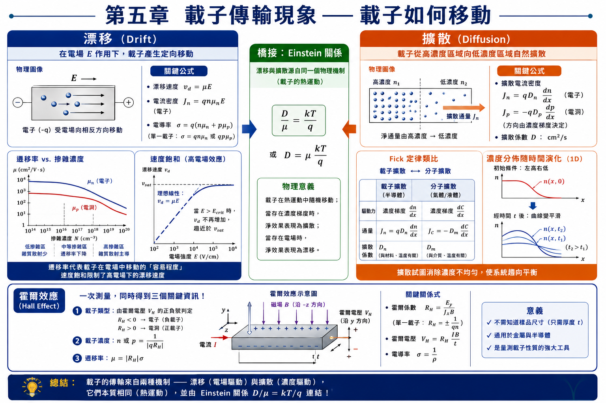
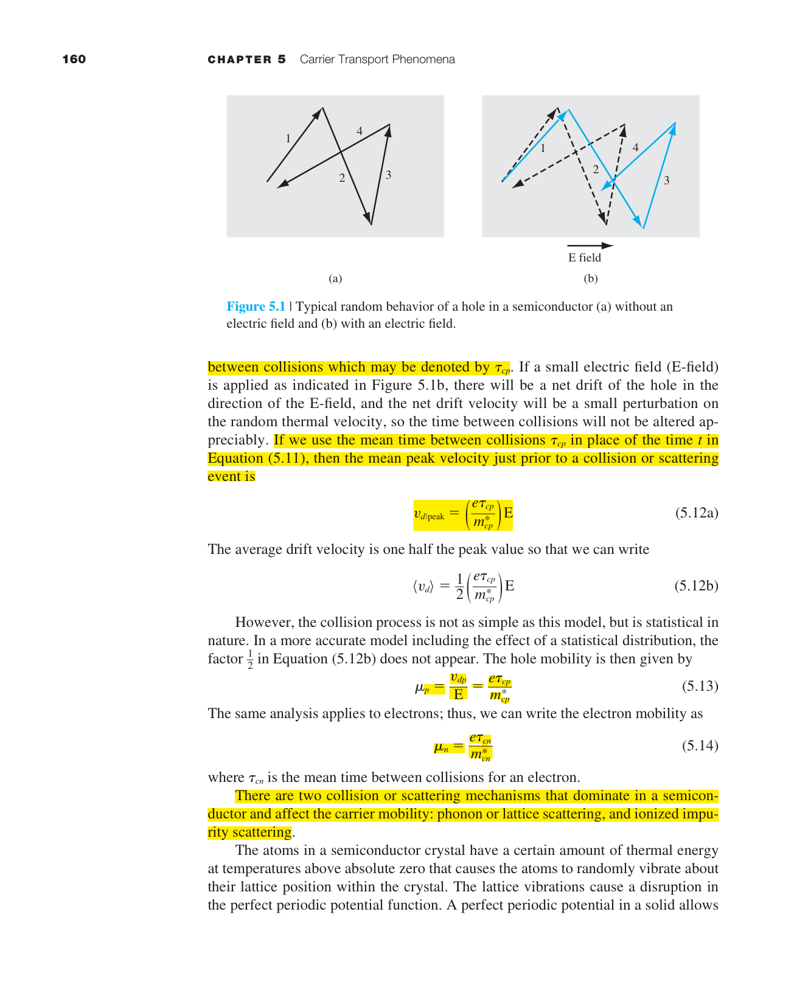
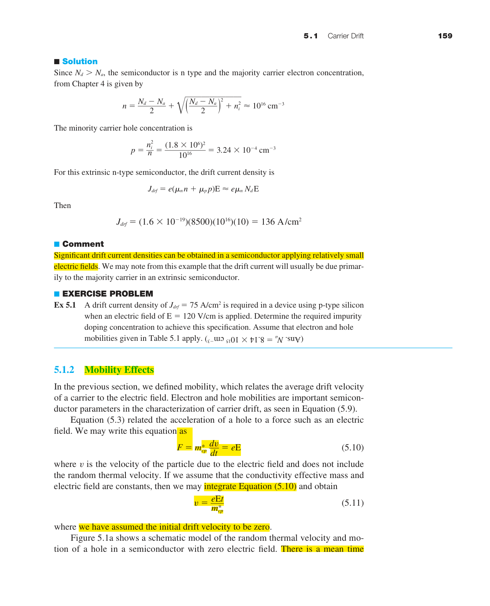
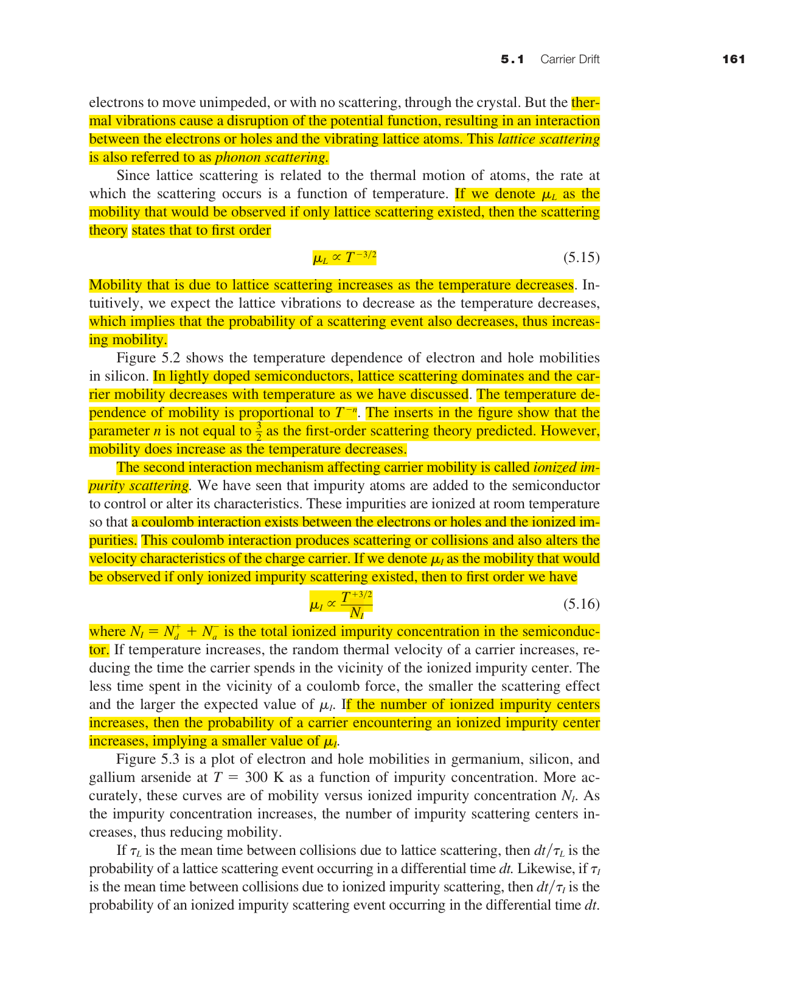
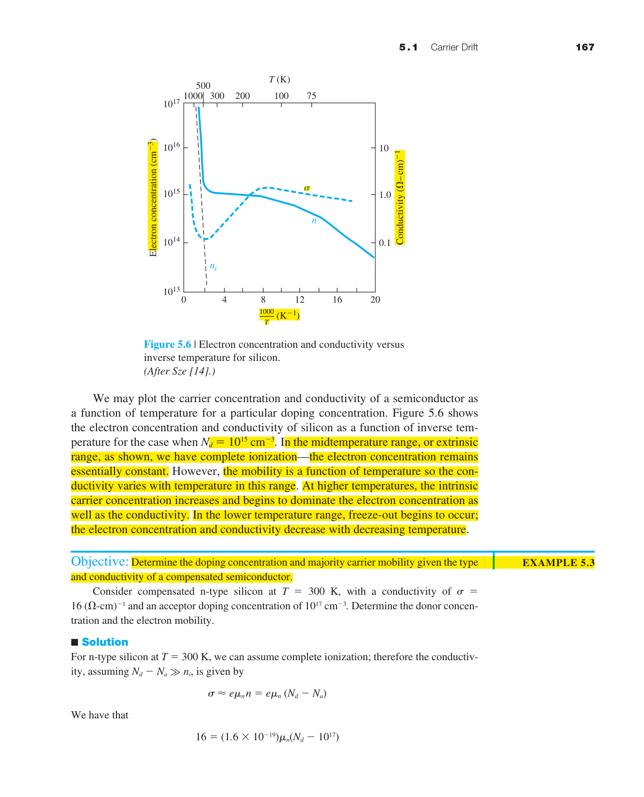
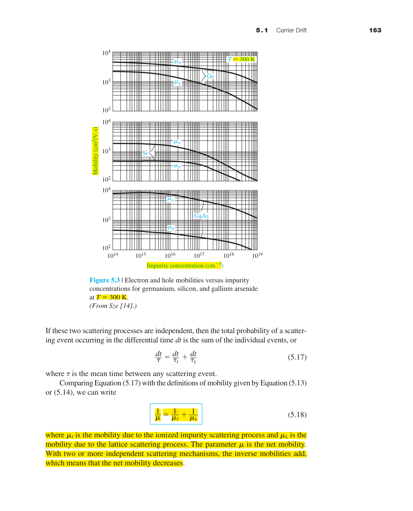
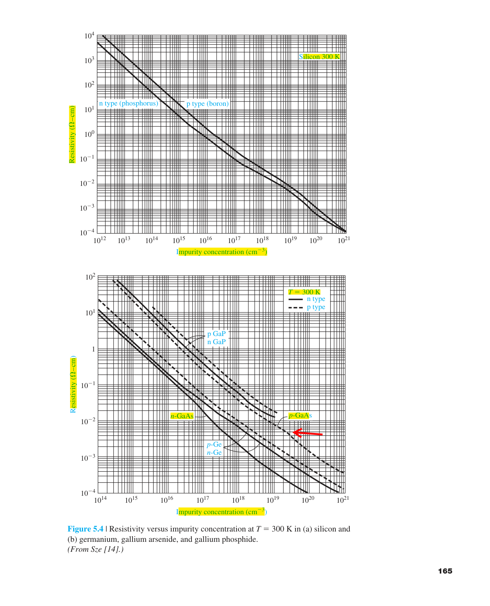
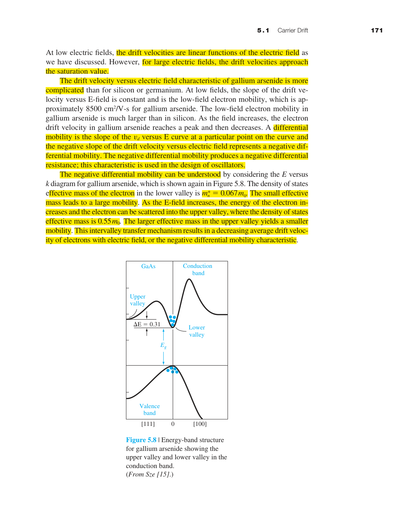
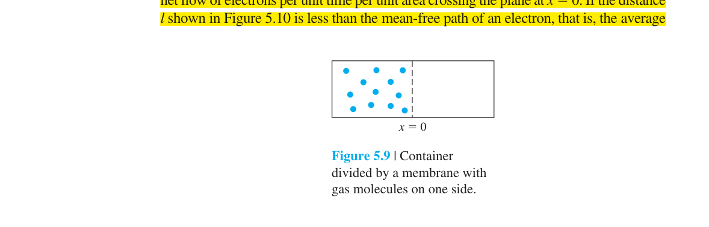
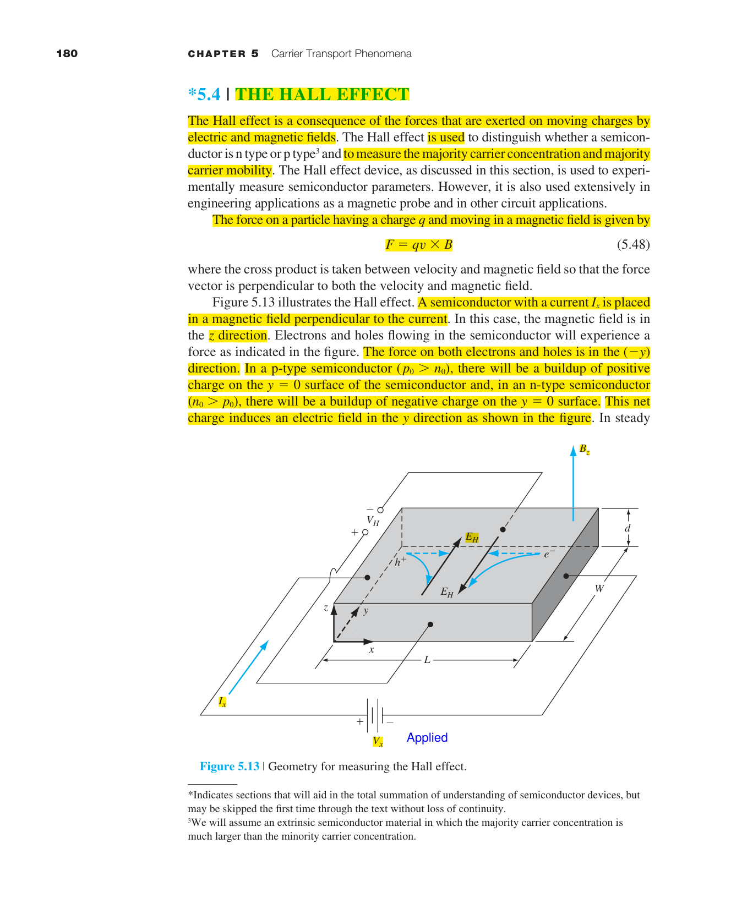

載子傳輸現象
5.0 本章預覽
第四章回答了「有多少載子」。本章回答下一個邏輯問題：載子如何移動？答案有兩種基本機制——漂移（drift）和擴散（diffusion）。這兩種機制結合起來構成了半導體元件中所有電流流動的基礎。
想像一條河流。水分子可以因兩種原因移動：重力（類似電場→漂移），或濃度差（一滴墨水在水中擴散→擴散）。半導體中的載子也是如此——電場推它們（漂移），濃度梯度分散它們（擴散）。
關鍵概念
- 漂移：$J_{drf}=e(\mu_n n+\mu_p p)E$，由散射時間決定 $\mu$。
- 擴散：$J_{diff}$ 由濃度梯度驅動，與漂移可並存。
- Einstein 關係：$D/\mu=kT/e$ 連結擴散與遷移率。
- 漸變摻雜：濃度梯度產生內建電場。
- 霍爾效應：量測載子濃度與類型的實驗工具。
🧭 本章推理地圖
- 已知條件熱平衡載子濃度與外加/內建電場、濃度梯度（Ch4）
- 中間機制漂移與擴散共同構成載子通量與電流密度（§5.1–§5.2）
- 高場效應速度飽和與散射機制競爭限制高場遷移率（§5.1.4）
- 工程用途計算元件電流、電阻率與霍爾量測驗證摻雜（Ch6–Ch8）

5.1.1 漂移電流密度

把一塊半導體放在電場中會發生什麼？電子（帶負電）受到與電場相反的力 $F = -e\mathcal{E}$；電洞（帶正電）受到與電場同向的力 $F = +e\mathcal{E}$。兩者都開始加速。
但如果只有加速，載子速度會無限增長。實際上，載子在晶體中不斷與晶格振動（聲子）和雜質離子碰撞。每次碰撞後，載子失去大部分動能，重新開始加速。淨效果是一個平均漂移速度 $v_d$——載子不是一直在加速，而是在加速與碰撞之間達到動態平衡。

漂移電流密度等於電荷密度乘以漂移速度。一般定義：
單位驗證也很重要——這不是繁瑣的細節，而是確保你不會搞混單位制的關鍵步驟：
對於電洞（$\rho = ep$）：$J_p = (ep)v_{dp}$ (5.2)。對於電子（$\rho = -en$）：$J_n = (-en)v_{dn}$ (5.6)。
在低電場下——這是一般元件操作的最常見情況——漂移速度與電場成正比：
為什麼電子漂移速度有負號？因為電子帶負電，受力方向與電場相反，所以漂移方向也相反。$\mu_n$ 本身定義為正值。把 (5.7) 代入 (5.6)：$J_n = (-en)(-\mu_n\mathcal{E}) = e\mu_n n\mathcal{E}$——負負得正，電子漂移電流與電場同向（符合傳統電流定義）。
結合電子和電洞的貢獻，得到總漂移電流密度：
📐 例題 5.1 — GaAs 中的漂移電流
n 型 GaAs，$N_d=10^{16}$ cm⁻³，$\mathcal{E}=10$ V/cm，$\mu_n=8500$ cm²/V·s。
$n_0\approx N_d=10^{16}$ cm⁻³。$p_0=n_i^2/n_0\approx3.2\times10^{-4}$ cm⁻³——比 $n_0$ 小了 20 個數量級，完全可以忽略。
$J_{\text{drf}}\approx e\mu_n N_d\mathcal{E} = (1.6\times10^{-19})(8500)(10^{16})(10)=136$ A/cm²。
10 V/cm 看似極小的電場（1 cm 的矽片上加 10 V），但已能產生 136 A/cm² 的電流密度。這顯示了半導體中電流對電場的敏感性。
5.1.2 散射機制與遷移率
遷移率 $\mu$ 是衡量載子在晶體中「跑多快」的指標。但它不是常數——它取決於載子被散射的頻率。要理解遷移率，必須先理解散射。
兩種主要散射機制
① 晶格散射（聲子散射）：原子在晶格點附近熱振動→週期位能被擾動→電子波被散射。溫度越高→原子振動越劇烈→散射越頻繁→遷移率越低。理論給出 $\mu_L \propto T^{-3/2}$。在室溫附近，這是純淨半導體中遷移率的主要限制。
② 雜質散射（游離雜質散射）：游離的施體（帶 +e）和受體（帶 −e）離子→庫侖力使經過的帶電載子偏轉→散射。想像一個高爾夫球滾過一個充滿凹坑的果嶺——凹坑（雜質離子）越多，球的路徑越容易被偏轉。摻雜濃度越高→雜質離子越多→遷移率越低。但溫度越高→載子熱速度越快→經過離子附近的時間越短→散射截面越小→$\mu_I \propto T^{3/2}/N_I$。

Matthiessen 規則——散射的「並聯電阻」

兩種散射同時存在時，散射率（單位時間碰撞次數 $1/\tau$）相加。因為 $\mu = e\tau/m^*$，遷移率的倒數也相加：
這和並聯電阻一模一樣——總遷移率由較小的那個主導（瓶頸效應）。如果 $\mu_L=1000$ 和 $\mu_I=500$，總 $\mu=333$——接近較小的 500 而不是 1000。這就是為什麼高摻雜樣品（$\mu_I$ 小）的遷移率遠低於純淨樣品。

實務上查圖 5.2–5.3 時要同時記住溫度與摻雜濃度：同一塊晶圓在不同退火條件下，遷移率曲線會整體下移或峰值位置改變。
📐 例題 — Matthiessen 規則合併
若 $\mu_L=1200$、$\mu_I=600$ cm²/V·s，則 $1/\mu=1/1200+1/600=1/400$ → $\mu=400$ cm²/V·s，明顯低於任一單獨項。
5.1.3 導電率——Ohm 定律的微觀基礎
我們從小學的 Ohm 定律 $V=IR$ 是一個巨觀描述——它告訴你元件的整體行為，但不告訴你為什麼。本章給出 Ohm 定律的微觀推導。
由 $J_{\text{drf}} = e(\mu_n n + \mu_p p)\mathcal{E}$ 和 $J = \sigma\mathcal{E}$（Ohm 定律的場形式），比較係數：
這兩個公式揭示了 Ohm 定律的本質：導電率取決於兩件事——有多少載子（$n, p$，來自第四章的摻雜）以及它們跑多快（$\mu_n, \mu_p$，來自本章的散射分析）。
對於 n 型材料（$n \gg p$）：$\sigma \approx e\mu_n n \approx e\mu_n N_d$。這給出一個極其實用的關係：知道摻雜濃度→查圖 5.3 得 $\mu_n$→立即算出導電率/電阻率。這是半導體製程監控中四點探針測量電阻率來推算摻雜濃度的物理基礎。

一個長度 $L$、截面積 $A$ 的半導體棒的電阻為：
四點探針量測的是塊材平均電阻率；若樣品厚度不均或表面氧化層導電，需修正幾何因子才能反推體內摻雜。
📐 例題 — n 型 Si 電阻率估算
$N_d=5\times10^{15}$ cm⁻³，查得 $\mu_n\approx1300$ cm²/V·s → $\rho\approx1/(e\mu_n N_d)\approx0.96$ Ω·cm。
5.1.4 速度飽和
低電場時 $v_d = \mu\mathcal{E}$——線性關係。但這個線性關係不會永遠持續。當電場超過約 $10^3$–$10^4$ V/cm 時，載子從電場獲得的能量速率超過了它們能透過聲子發射散失的速率→載子「變熱」→漂移速度趨向一個飽和值：

GaAs 的特殊行為——Gunn 效應：GaAs 的導帶有兩個「谷」——低能量的 $\Gamma$ 谷（高遷移率）和高能量的 $L$ 谷（低遷移率）。在足夠高的電場下，電子獲得足夠能量從 $\Gamma$ 谷散射到 $L$ 谷→有效遷移率驟降→漂移速度隨電場增加而下降→負微分遷移率。這導致 GaAs 中的電流振盪（Gunn 振盪），可用於微波振盪器。
比較 Si 與 GaAs 的 $v$–$E$ 曲線可見：Si 單調趨近飽和，GaAs 則在轉谷後出現負斜率區，這是選材時必須考慮的差異。
速度飽和也改變了功率與熱分布：高場區載子把電場能量轉給晶格，是短通道自熱效應的重要來源之一。
📝 自編概念例 — 估算通道電場
$L=50$ nm、$V_{DS}=1$ V → $\mathcal{E}\approx2\times10^5$ V/cm，遠超線性區，必須用飽和速度而非常數 $\mu$ 估算電流。
5.2 載子擴散
到目前為止我們只討論了電場驅動的運動（漂移）。現在考慮另一種驅動力——濃度梯度。
想像你在一個擁擠的房間的一端噴了香水。即使沒有風（沒有「電場」），香味也會逐漸擴散到整個房間。為什麼？因為香水分子在房間一端濃度高、另一端濃度低→隨機熱運動使分子從高濃度區淨移動到低濃度區。這就是擴散的本質——隨機熱運動 + 濃度梯度 = 淨粒子流。
半導體中的載子也是如此。如果電子濃度在空間中不均勻（$dn/dx \neq 0$），就會有淨電子流從高濃度流向低濃度。擴散電流密度與濃度梯度成正比——這就是 Fick 第一定律的半導體版本：

電洞擴散電流的負號困擾了許多學生。電洞從高濃度流向低濃度（沿 $+x$ 方向），所以 $dp/dx<0$。但電流方向定義為正電荷流動方向→電洞流向右（$+x$），電流也向右（$+x$）。然而 $dp/dx<0$，所以 $J_p$ 必須是正的→需要負號：$J_p = -eD_p(dp/dx)$ = 正數。
⭐ 總電流密度——半導體元件分析的核心方程
在一般情況下，漂移和擴散同時存在。總電流密度為兩者之和：
📝 自編概念例 — 漂移與擴散何者主導？
均勻摻雜長棒加小電壓→只有漂移；pn 接面中性區少數載子尖峰→擴散主導；空乏區強電場→漂移主導。
5.2.1 擴散電流密度
若電子濃度隨位置改變（$dn/dx\neq0$），隨機熱運動會使載子從高濃度區淨流向低濃度區，形成擴散電流。這與電場無關——即使沒有外加電壓，只要濃度不均勻，就會有淨載子流。
電洞從高濃度流向低濃度時 $dp/dx<0$，但電流定義為正電荷流動方向，因此 $J_p=-eD_p(dp/dx)$ 需要負號才能得到正的電洞電流。
在 pn 接面順向偏壓的中性區，少數載子濃度梯度很大，擴散電流往往主導；在空乏區則以漂移為主。判斷時先問：哪裡有濃度梯度？哪裡有強電場？
擴散係數 $D$ 的量級約為 $10$–$40$ cm²/s（室溫 Si），遠小於飽和漂移速度與幾何尺度的組合所能造成的等效輸運；因此擴散主導的問題常與「濃度分布形狀」和「復合壽命」綁在一起。
📐 例題 5.2 — 線性濃度梯度的擴散電流
題目：$n$ 從 $10^{16}$ 到 $10^{15}$ cm⁻³ 在 $10$ μm 內線性下降，$D_n=35$ cm²/s。
解：$dn/dx\approx-9\times10^{14}$ cm⁻⁴ → $J_n=eD_n|dn/dx|\approx0.5$ A/cm²。
意義：中等梯度即可產生可觀電流密度，說明擴散在接面問題中不可忽略。
5.2.2 總電流密度
實際半導體中電場與濃度梯度往往同時存在，總電流必須把漂移項與擴散項一起寫下：
這是後續 pn 二極體、BJT 與 MOS 小訊號分析的共同起點。每一項都有明確物理：前兩項是電子漂移與擴散，後兩項是電洞漂移與擴散。
在非平衡問題中，連續性方程會把 (5.39) 與產生率、復合率連起來；第六章的少數載子擴散方程就是對 (5.39) 在適當近似下的重寫。
寫總電流時還要注意參考方向：一維模型假設電流沿 $x$ 方向，電子與電洞貢獻相加得到總電流密度，但兩者的擴散項符號規則不同。
若只保留多數載子、忽略少數載子濃度（低階注入近似），式 (5.39) 可大幅簡化——這是第八章推導 Shockley 方程時的關鍵步驟。
📝 自編概念例：何時可忽略擴散項？
題目：均勻摻雜塊材加小電場。
解：$dn/dx=dp/dx=0$，只剩漂移項。
答案：歐姆定律區；總電流 $J=\sigma E$。
5.3 Einstein 關係——漂移與擴散不是獨立的
漂移係數 $\mu$ 和擴散係數 $D$ 看起來是兩個獨立的材料參數。但它們本質上由同一個物理過程驅動——熱運動。Einstein 關係揭示了它們之間的深刻連結：
5.3.1 漸變雜質分布的內建電場
在許多實際元件中，摻雜濃度不是均勻的。例如：離子植入後的退火擴散會造成濃度梯度；BJT 的基區有漂移場（grading）設計。當施體濃度 $N_d(x)$ 隨位置變化時，平衡態的電子濃度 $n_0(x) \approx N_d(x)$ 也隨位置變化。
如果沒有電場，電子會從高濃度區擴散到低濃度區。但擴散導致電荷分離（電子離開的區域留下帶正電的施體離子）→產生一個內建電場 $\mathcal{E}$。在熱平衡下，這個電場恰好阻止淨電子流動：
這個內建電場在 BJT 的緩變基區（graded base）中被刻意利用——在基區中製造一個 Ge 組成的梯度（SiGe HBT）或摻雜梯度→產生一個「漂移場」→加速少數載子穿越基區→降低 $\tau_b$→提高 $f_T$。
為什麼這個關係成立？考慮一塊有梯度摻雜的半導體。載子傾向從高濃度區擴散到低濃度區。但擴散導致電荷分離（例如電子跑掉了，留下正的施體離子）→產生內建電場。這個內建電場驅動載子往反方向漂移。在熱平衡下（沒有外部電壓、沒有淨電流），漂移和擴散恰好互相抵消。這個平衡條件強制了 $D/\mu = kT/e$。
物理意義：室溫下 $kT/e = 0.0259$ V——這就是「熱電壓」。它告訴我們漂移和擴散的相對重要性：要產生與一個 $kT/e$ 的濃度變化（約 2.7 倍）等效的電流，需要施加 0.0259 V 的電壓。換言之，濃度梯度是一種「等效電壓」。
📐 例題 — 熱電壓與濃度比
兩點濃度比 $n_2/n_1\approx e^{\Delta V/V_T}$；$\Delta V=0.0259$ V 對應約 2.7 倍濃度差，說明濃度梯度可等效為小電壓尺度。
5.3.1 漸變雜質分布的感生電場
當 $N_d(x)$ 或 $N_a(x)$ 隨位置變化時，平衡載子濃度也跟著變化。若沒有電場，載子會因濃度梯度擴散；擴散造成電荷分離後，系統會建立內建電場使漂移與擴散抵消。
這個結果說明：摻雜梯度等效於一個內部電場，在 BJT 緩變基區與 SiGe HBT 中被刻意用來加速少數載子穿越基區。
內建電場也會造成能帶彎曲：靜電位隨位置改變，導帶與價帶邊界不再水平。這與 pn 接面空乏區的能帶彎曲屬同一套靜電學語言。
漸變摻雜不等於「有外加電壓」；它是材料內部為了維持平衡而自發形成的電場，只在有濃度梯度時出現。
📝 自編概念例：梯度摻雜為何不等於均勻摻雜加電場？
題目：比較 $N_d(x)$ 線性變化與均勻 $N_d$ 加外加電場。
解：梯度情形中電場與濃度分布自洽耦合，載子濃度跟隨 $N_d(x)$；外加電場則會改變準中性條件。
5.3.2 Einstein 關係
漂移係數 $\mu$ 與擴散係數 $D$ 看似獨立，其實由同一熱運動與散射機制制約。熱平衡要求淨電流為零時，漂移與擴散必須互相抵消，由此得到：
室溫下 $kT/e\approx0.0259$ V，即熱電壓 $V_T$。因此 $D_n\approx\mu_n V_T$；Si 中 $\mu_n\approx1350$ cm²/V·s → $D_n\approx35$ cm²/s。
對電洞可寫 $J_p=e\mu_p p\mathcal{E}-eD_p(dp/dx)=0$，同樣得到 $D_p/\mu_p=kT/e$。這保證了電子與電洞在相同溫度下共享同一熱電壓尺度。
Einstein 關係把第四章的統計平衡與第五章的傳輸係數接起來：沒有它，擴散與漂移會像是兩套互不關聯的參數表。
在器件模擬中，$D$ 常由 $\mu$ 與局部溫度自動計算，確保擴散與漂移項在數值上自洽。
📐 例題 — 由 $\mu_n$ 估 $D_n$
GaAs 室溫 $\mu_n=8500$ cm²/V·s → $D_n=0.0259\times8500\approx220$ cm²/s，遠大於 Si，有利於高速器件中的少數載子輸運。
5.4 霍爾效應——半導體診斷的萬能工具
如果你拿到一塊未知的半導體樣品，你需要知道三件事：它是 n 型還是 p 型？載子濃度多少？遷移率多大？霍爾效應一次回答所有三個問題。
原理：將樣品放在垂直磁場 $B$ 中，沿 $x$ 方向通以電流 $I$。移動的載子受到 Lorentz 力 $\mathbf{F} = q(\mathbf{v} \times \mathbf{B})$，被推向樣品的 $+y$ 或 $-y$ 側→一側累積電荷→產生橫向霍爾電壓 $V_H$。

平衡時 Lorentz 力與霍爾電場的力互相抵消：
代換 $v_d = I/(epWd)$（由 $J = I/(Wd) = epv_d$）：
定義霍爾係數 $R_H$：
$|R_H|$ 的大小告訴你載子濃度：$p = 1/(eR_H)$。霍爾遷移率：$\mu_H = |R_H|\sigma$。一次測量：類型 + 濃度 + 遷移率——三個關鍵參數全部到手。
📐 例題 — 由霍爾係數求濃度
n 型樣品測得 $R_H=-2.5\times10^3$ cm³/C → $n=1/(e|R_H|)\approx2.5\times10^{15}$ cm⁻³。
本章摘要
- 漂移：電場驅動載子運動。$v_d = \mu\mathcal{E}$。$J_{\text{drf}} = e(\mu_n n + \mu_p p)\mathcal{E}$。
- 遷移率：$\mu = e\tau/m^*$。受晶格散射（$\mu_L \propto T^{-3/2}$）和雜質散射（$\mu_I \propto T^{3/2}/N_I$）限制。Matthiessen 規則合併兩者：$1/\mu = 1/\mu_L + 1/\mu_I$。
- 導電率：$\sigma = e(\mu_n n + \mu_p p)$。Ohm 定律的微觀基礎。電阻率 $\rho = 1/\sigma$。
- 速度飽和：高電場時 $v_d \to v_{\text{sat}} \approx 10^7$ cm/s。GaAs 有負微分遷移率（Gunn 效應）。速度飽和是奈米級 CMOS 性能的物理限制。
- 擴散：濃度梯度驅動。$J_n = eD_n(dn/dx)$，$J_p = -eD_p(dp/dx)$。電洞公式的負號來自電流方向定義。
- 總電流方程 (5.39)：$J =$ 漂移項 $+$ 擴散項。所有半導體元件分析的基礎。
- Einstein 關係：$D/\mu = kT/e$。漂移和擴散由同一熱運動驅動，非獨立參數。熱平衡時兩者抵消產生此關係。
- 霍爾效應：$V_H = IB/(epd)$。一次測量得到載子類型（$R_H$ 正負號）、濃度（$1/eR_H$）、遷移率（$|R_H|\sigma$）。
常見誤解與修正
載子傳輸 的公式都來自特定物理假設；請先確認適用條件，再代入數字。
電場、電流、濃度梯度與載子流方向常不同，建議先畫圖再判斷正負號。
低階注入、空乏近似、非簡併與一維模型都不是永遠成立。
自我檢核
我能不能用一句話說出本章主軸？
本章主軸是把前面章節的材料物理量放進 載子傳輸 的具體問題中。
我能不能列出本章最重要的近似？
請確認你能指出每個公式背後的平衡、空乏、低階注入或非簡併條件。
我能不能用圖解釋主要公式？
若能畫出能帶、電場、濃度或電荷分布，公式通常就不會變成死背。
延伸學習與下一步
建議把本章公式整理成「物理意義、適用條件、常見錯誤」三欄表。
若要銜接下一章，請特別注意本章中作為邊界條件或材料參數的量。
完成後可回到習題頁，用一題數值題檢查量級是否合理。
推導、假設與章末診斷
方程式使用契約
- $v_d=\mu E$ 僅適用低場、局部熱平衡與遷移率近似常數；高場須使用速度飽和模型。
- Fick 擴散假設濃度在平均自由程尺度上緩慢變化，且可用局部濃度與單一擴散係數描述。
- 漂移–擴散模型忽略彈道、量子相干與強非局域輸運。
- Einstein 關係 $D/\mu=kT/q$ 假設非退化載子與熱平衡；退化半導體需廣義 Einstein 關係。
中間推導：Einstein 關係
- 電子總電流 $J_n=q\mu_n nE+qD_n(dn/dx)$。
- 熱平衡時 $J_n=0$，且 $n=N_c e^{(E_F-E_c)/kT}$。
- $E=(1/q)dE_c/dx$，所以 $(1/n)dn/dx=-(q/kT)E$。
- 代回零電流條件，得 $D_n/\mu_n=kT/q=V_T$。
章末練習與概念診斷
電子由高濃度往低濃度擴散，為何電子擴散電流方向可能相反？
電子帶負電；粒子通量方向與傳統正電流方向相反，符號必須由電荷與濃度梯度共同決定。
何時不能把遷移率視為材料常數？
溫度、摻雜、垂直場與高橫向場改變散射率；接近速度飽和時 $v_d$ 不再與 $E$ 成正比。
延伸計算練習
完成上方診斷後，請在不查公式的情況下重建代表推導，並改變一個參數檢查極限行為。更多含數值與解答的題目：本章完整習題頁。